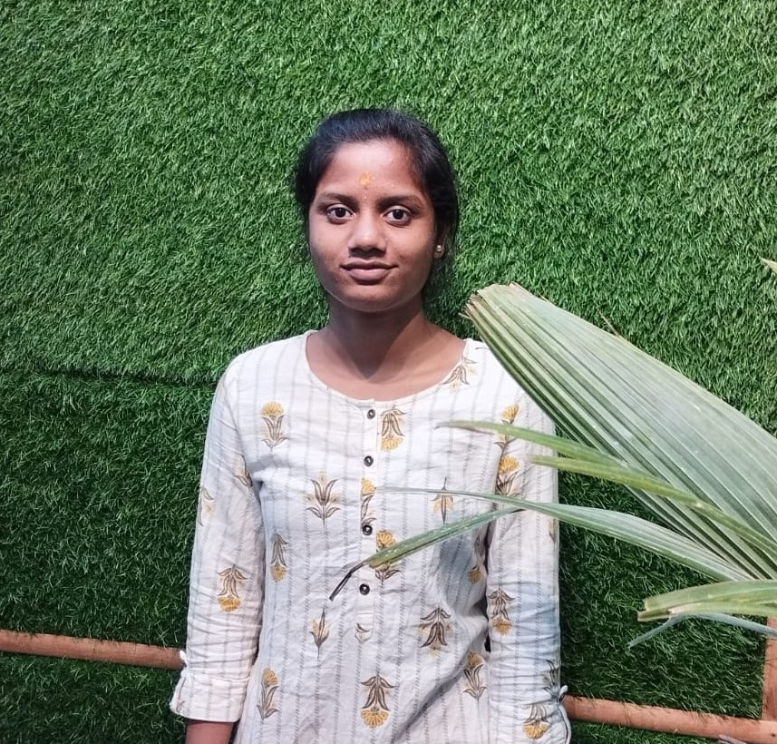

I AM PRIYA KOTAGIRIWAR.
I BELEIVE IN HARDWORK AND DEDICATION.
I AM A PASSIONATE WEB DEVELOPER

ABOUT ME
I'm a Computer Science and Engineering undergraduate ,
passionate about technology and eager to expand my horizons. My journey in the
tech world has led me to focus on Front-End development and Python programming,
while also setting my sights on incorporating databases for more interactive and
responsive web experiences.
MY JOURNEY
Currently pursuing a Bachelor of Technology (B.Tech)
in Computer Science and Engineering, I'm on a journey of continuous growth.
Learning and experimentation are at the heart of my mission, both in technology
and the development of my soft skills.
SOFT SKILLS
Beyond technical skills, I bring essential
soft skills to the table. I'm a dedicated learner, a problem solver, and a good team player.
Effective communication is my tool for collaboration, and adaptability allows me to thrive
in diverse challenges.
MY PROMISE
My promise is to fuse my technical expertise with soft skills, delivering
innovative projects that not only look great but provide interactive, data-driven experiences.
I'm eager to contribute to projects that demand holistic problem-solving, effective teamwork,
and a strong technical foundation.